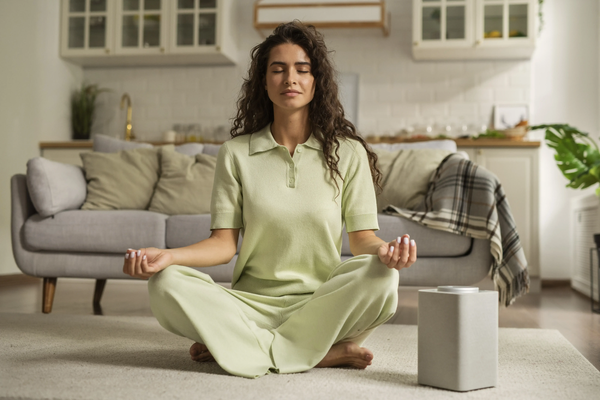
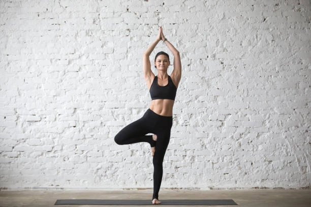
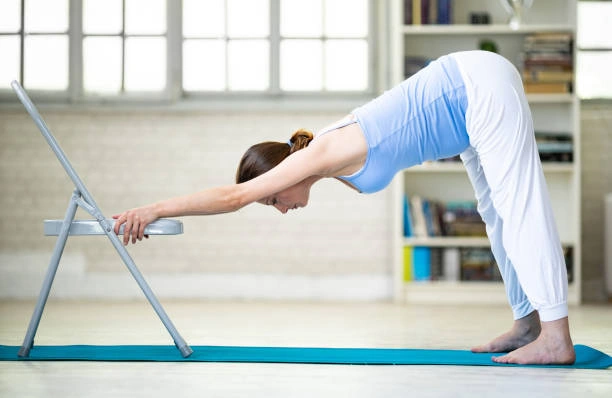
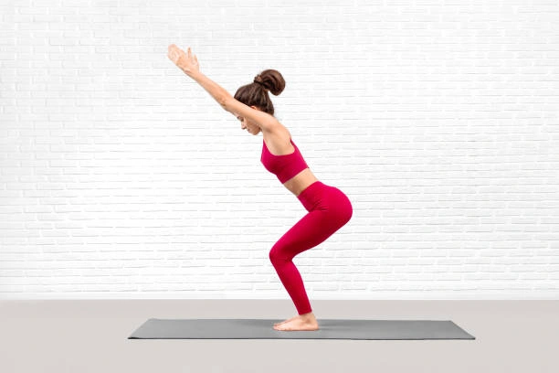
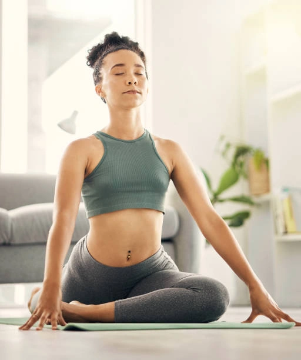

Tadasana (Mountain Pose)
Stand tall with feet parallel and weight evenly on both legs. Shoulders relaxed, breath steady. Hold 1–2 minutes. A grounding start to your session.
Educational content only — not medical or therapeutic advice. Stop if you feel pain, dizziness, or unusual strain. Consult a healthcare provider before starting.

Here you will find step-by-step pose guides, ready-made morning and evening blocks, and safety tips. Choose a section below.
View Poses
Stand tall with feet parallel and weight evenly on both legs. Shoulders relaxed, breath steady. Hold 1–2 minutes. A grounding start to your session.
Sit on your heels, fold forward with your forehead on the mat, arms along your body or extended. Hold 2–3 minutes. A resting pose many people use between active sequences.
Seated with one leg bent and the other to the side. Twist on the exhale, spine long. Hold 30 seconds per side. A gentle way to explore rotation in the spine.
First-week sequence: Tadasana → Balasana → twist → Balasana again. About 12–15 minutes total.
Four energizing poses to wake up your body — shown in a morning-friendly sequence you can repeat in 10–15 minutes.



A cycle of 8–12 movements: forward fold, plank, downward dog, lunge. 3–5 rounds in the morning warm the body in 5–7 minutes.
Stand on one foot, other foot on thigh or calf (not the knee). Palms together at the chest. Hold 30 seconds per leg — builds balance.
From hands and knees, lift your hips, heels toward the mat, spine long. Take 5–8 slow breaths. Stretches the backs of the legs and shoulders.
Sit back as if into an invisible chair: knees over ankles, spine tall, arms up or forward. Hold 5–8 breaths. Strengthens legs and energizes the body.
Morning: Sun Salutation → Tree Pose → Downward Dog → Chair Pose → short Savasana.
Midday: Tadasana → seated twist → Balasana — a short break from desk work for some practitioners.
Evening: see the Relaxation section below.
Evening yoga focuses on slowing down. Calm poses and steady breathing can help you unwind after the day and prepare for rest.
Relaxation closes a practice session. Lying still and observing your breath may help you wind down. Individual experiences vary.
Reclining Butterfly
Lie on your back, soles of the feet together, knees wide. Place a blanket under the thighs if the knees do not reach the floor. Hold 3–5 minutes. Gently opens the hips and inner thighs. Breathe into the belly, shoulders relaxed.
Corpse Pose
Lie on your back, legs slightly apart, palms up, eyes closed. Do not control the breath — just observe. If thoughts wander, return attention to the exhale. 5–10 minutes integrate everything you did on the mat.

Child's Pose
Sit on your heels, fold forward, forehead on the mat. Two to three minutes. If knees are sensitive, place a blanket between thighs and calves.
15 minutes before bed
Dim the lights, phone on Do Not Disturb. Practice 1–2 hours before sleep. Cycle: 1 min Tadasana → 3 min butterfly → 2 min child's pose → 8–10 min Savasana.
Use props: a block under your hands in a forward fold, a blanket under the knees in Child's Pose. Flexibility comes gradually — do not force range of motion.
Rest when you feel unwell. Gentle seated breathing may be appropriate for some days. A qualified healthcare provider can advise what is suitable for your situation.
Many people find 3–5 short sessions per week easier to maintain than one long session. Consistency matters more than duration. Your needs may differ.
Many people become more comfortable with familiar poses after regular practice. Progress varies by person, schedule, and starting point. Individual experiences differ.

Need a personalized program? Contact us.
Request our free 7-day starter plan by email. Guided plan shown at $29/month is for information only — payment is not accepted on this site.